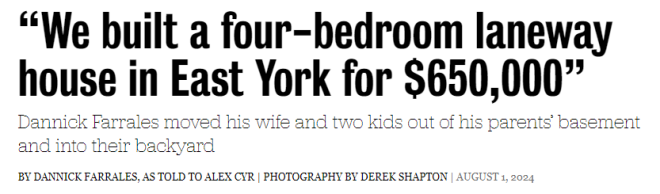
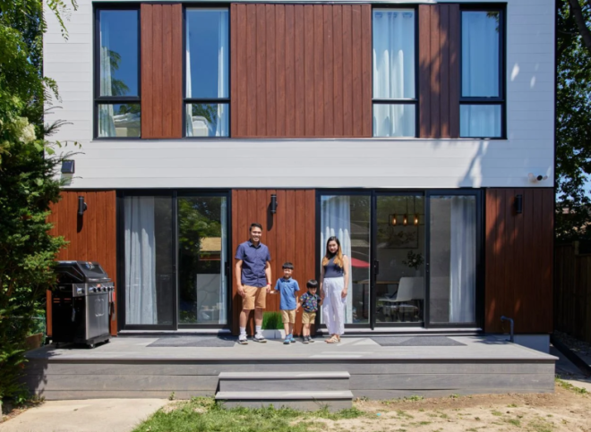
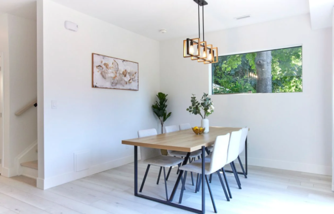
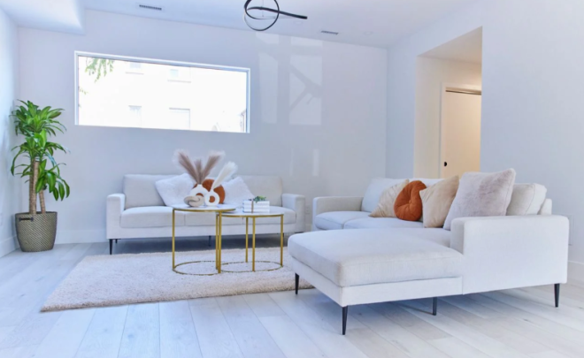
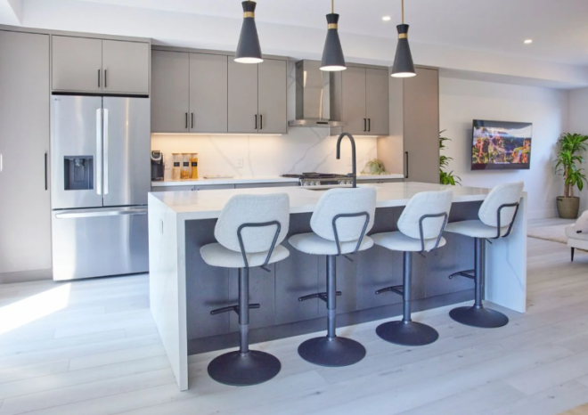
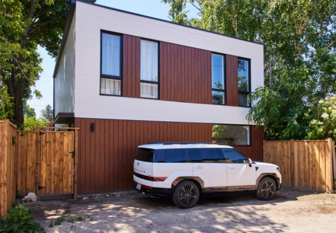
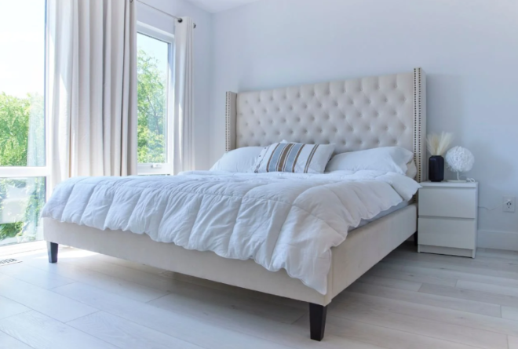

多伦多亚裔移民一家四口花$65万加元在后院盖了一套四居室独立屋，终于不用再住在地下室，给很多人提供了一个不错的思路。

据英文媒体Toronto Life报道，2017年，Alex和妻子Christine在多伦多Victoria Park/ Eglinton附近租了一套两居室公寓。当时他们刚刚迎来第一个孩子。

“我们很喜欢这个社区，但很快意识到，我们住的地方太拥挤了，不适合一家四口生活。”
于是，他们开始在市中心附近寻找合适的房子。
1996年，当Alex六岁的时候，他们一家人从菲律宾搬来多伦多，从那时起，他就跟父母一直住在东约克，靠近DVP和St. Claire附近。
这对年轻夫妻很快意识到，他们在多伦多买一套独立屋远远超出了能力范围。“我们最多愿意花$75万加元，但即便是旧平房也要卖$100多万。我们开始考虑Oshawa，甚至汉密尔顿的房源，但没有什么吸引我们的地方……”

另一个选择是——在一块新地上建房子。“我们的一个朋友建了一栋新房子，花了两年多的时间才完工，而且她的建筑团队超出了预算$10万加元。所以，在2019年，我们搬进了我父母的地下室，它并不比我们原来的公寓打多少，但却可以帮我们省钱。”
随后，在2021年，Alex发现他们的邻居正在后院建造一栋房子——他们称之为后院的“单身公寓”。
Alex深受启发，所以开始做一些研究。夫妻俩不禁在想，在父母家后院建造一栋独立屋是否是他们在多伦多拥有独立住宅的唯一方式。
“有些人可能不喜欢住在离家人这么近的地方，但对我们来说，这感觉像是一种福利。”Alex说，他父母对在后院盖房的想法也同样感到兴奋，因为这样就可以花更多时间来陪伴家人们。

说干就干，Alex联系了一家建筑公司，问他们是否能够以$550,000加元的价格建造一栋四居室的独立屋。他们回复说“必须是$680,000加元”，即便如此，这也比市面上很多待售的独立屋要便宜的多。
终于，施工开始进行了。
“我们每周检查一次，看看我们的要求是否稳步实现。一切只用了9个月就完成了，而且最终成品更是超出想象：一栋位于东约克的1700平方英尺、四间我是的定制住宅！”

Alex说，最终，他们花费了大约$650,000加元——比预算少了$30,000加元，他们用多余的钱买了一辆SUV，余下的钱则用来美化院子。

“我们于今年5月份搬进了这里，我的朋友来访时，他们不敢相信我们不用花光积蓄就能买得起这样的房子。与此同时，孩子也觉得他们住的比在地下室要宽敞。”Alex说，他们一家人都很喜欢这里。

最主要的好处是，他们有室内和室外的空间。
“我们有足够的空间做饭，有安全的后院供孩子跑来跑去，有足够长的前院可以停放一辆家用车，甚至还有一个专门放玩具的房间。不过，我们的第三个孩子将在11月出生，所以玩具室很快就会被改造成托儿所。”
Alex说，他感觉自己在多伦多住房市场找到了一个BUG。
“不管你怎么看，这对我们来说都是最好的选择，绝对物有所值！至少在孩子们高中毕业之前，我们不会离开这里……”